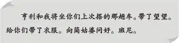

The Boys Come
两天后，麦琪终于说出了自己的真实想法：每天能美美地吃上三顿饭，让她好过多了，而顶顶开心的是，还有人陪着她说话。
麦琪和姐妹俩坐在后门的台阶上，享受着清凉的晚风。晚餐用的盘子都洗好了。农场上空已经有了稀疏的星星。
“也许我不该过问，”麦琪开口道，“但是我很想知道，你爷爷打算怎么安排你们的姑婆呢？她需要一直有人照料，可是你们俩也不可能整个夏天都呆在这里啊！”
“也许可以，”维莉轻轻地说，“我们喜欢这里，而且我觉得简姑婆现在已经接受我俩了。”
“什么都好——除了一件事以外。”杰西说。
“嗯，我知道是什么，”维莉说，“我们都想亨利和班尼了。”
维莉看起来有些伤感。
“说不定简姑婆也能让他俩来，”杰西说，“那样就完美了。”说完她看了看妹妹。
“明天我们问问她吧！”维莉说。
于是，姐妹俩上楼睡觉去了。
第二天早上，杰西做了一份可口的早餐，端到姑婆的房间。趁小老太太开始吃饭的工夫，杰西在她床边坐了下来。
“简姑婆，我们想亨利和班尼了，”杰西说，“您能不能让他们过来住几天？我敢保证，只要您答应，爷爷肯定会让他俩来的。”
“好吧，”姑婆说，“我答应。”
说完，小老太太抬起头来。
“但是，你们要记着，我可不想见詹姆斯！”她说。
“如果您试着了解他的话，就会发现爷爷人挺好的。”杰西说。
简姑婆笑了笑，“别忘了，我认识你爷爷可比你们早多了。如果那两个男孩跟他一样的话，就让他们滚回去！”
听到姑婆这么说，虽然杰西有些难过，可是她并没有还嘴。她这样做倒是很正确，因为简姑婆已经开始喜欢上她们姐妹俩了。
这时简姑婆心里琢磨着，说什么才能让杰西开心起来呢？
“让班尼把他的小狗也带过来。”她终于想到了这个主意。
杰西的脸上顿时露出了灿烂的笑容。但她没有解释望望其实不是班尼的狗，而是她的狗。
她只是说：“哇，太好了！望望肯定会喜欢这里的，我们保证不让它进您的房间。”
“这倒没关系，”简姑婆说，“要是小狗乖，我倒希望它在我的屋子里待着。”
“望望是只好狗狗，”杰西说，“它还救过我们的命呢！”
姐妹俩赶到车站发了电报。第二天，她们就收到了班尼的回电。他在电文里说：
亨利和我将坐你们上次搭的那趟车。带了望望。给你们带了衣服。向简姑婆问好。班尼。

兄弟俩来到农场以后，四个孩子聚在厨房里，开心极了！
“你快带他俩去见简姑婆吧，”杰西拉着望望的链子对维莉说，“我在这儿看着望望。”
兄弟俩跟着维莉进了卧室。简姑婆靠着枕头，坐得笔直，她那双蓝眼睛炯炯有神。
“简姑婆，您好！”班尼朝床边走了过去，“我是班尼。您真是个可爱的小姑娘！”
简姑婆惊诧得差点笑出声来。
“那么，你就是亨利，对吗？”她说。
“没错。您生病了，我们都很难过。”亨利说。面对这个古怪的老太太，他实在不知道该说什么。
“谁说我生病了？”简姑婆说，“还好，你们一点儿也不像你爷爷。”
“嗯，是不太像。”亨利附和道。
“没事儿，别担心，”简姑婆解释道，“你们跟他不一样我才高兴呢！她们说的那只狗狗呢？”
“杰西，把望望带进来！”亨利喊了一声。
大家都在期待小狗狗的举动。只见它走到床边，看着小老太太，接着坐在地上，伸出了爪子。
“它想握手呢！”班尼高兴地喊道，“跟它握握手吧，简姑婆，要不然它会伤心的！”
孩子们原以为姑婆会生气。可是他们万万没有想到，她竟然坐起来跟小狗握了握手。
“乖狗狗。”她说着又躺了下来。
望望回头看了看杰西，咧开了嘴巴。
“看，简姑婆，它在笑呢！”班尼高兴地大喊，“它喜欢您！”
“不错不错！”简姑婆说，“至少有小狗喜欢我。你们可以去吃饭了。出去的时候把门关上。这么一折腾，我可累了。”
孩子们回到厨房，坐在餐桌边，聊起了天。
“想不到简姑婆是这个样子吧？”杰西问班尼和亨利。
“她的确有些怪，”亨利说，“可是我喜欢她。”
杰西说：“猜猜我在想什么。要治好简姑婆，咱们几个谁最有戏？”
三个孩子异口同声地说：“望望！”